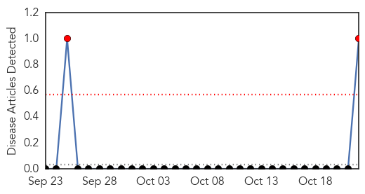
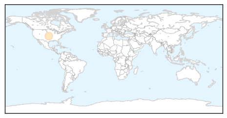

Bubonic Plague
30-Day Web Trend
2 alerts, 0 warnings

30-Day Twitter Trend
0 alerts, 0 warnings

Article Locations
Article Confidences

Top Articles:
Top Tweets:
-
No tweets found for Oct 22, 2014
Chikungunya
30-Day Web Trend
0 alerts, 2 warnings

30-Day Twitter Trend
2 alerts, 0 warnings

Article Locations

Article Confidences

Top Articles:
- 0.998
- Belize News and Opinion on www.breakingbelizenews.com
- 0.998
- Chikungunya, mosquito-borne virus, infected more than 200 Canadians
- 0.998
- More than 200 Canadians infected with Chikungunya virus according to health agency
- 0.998
- Chikungunya virus infects 200 Canadians
- 0.978
- Virus tally nears 500,000 in Dominican Republic
- 0.750
- Trinidad and Tobago's Newsday
Top Tweets:
-
No tweets found for Oct 22, 2014